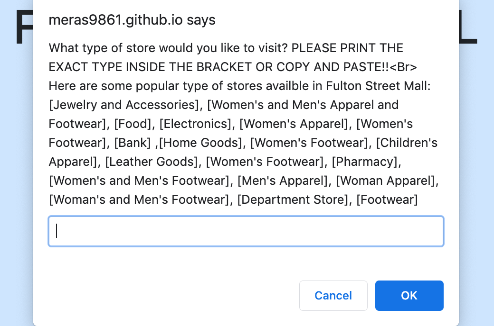
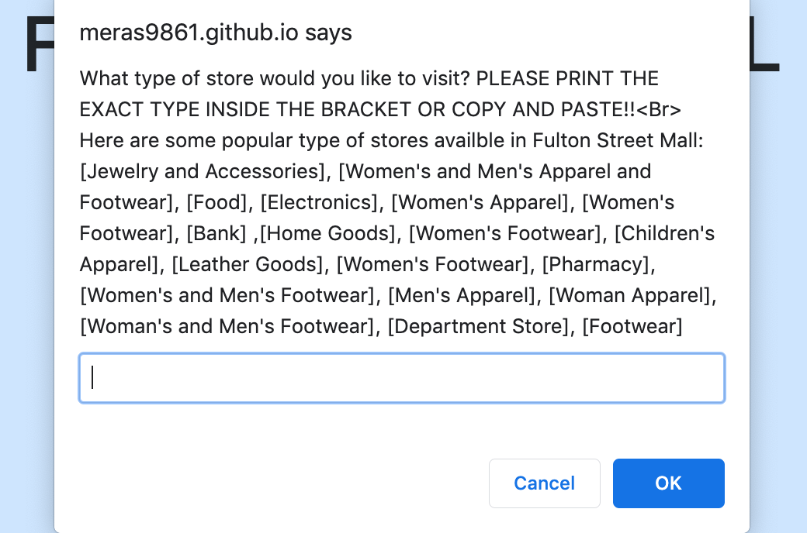

jsproject2-cindyl5697-meras9861-amiam3282.html
This was the second project that I did in my SEP11 class. I chose to work with two of my classmates, Cindy and Amia. We worked together to create a project that asks the user what type of store they would like to visit by using ```prompt()``` and a loop that goes through all of the stores listed in a certain location that we chose (Fulton Street Mall) that fall under specific store-type categories such as banks, accessories, electronics, women/men clothing, etc. We then extended our project by adding the store's website next to it so that in the end, users will have a direct link to the store of their choice. We wanted users to get to see all possible stores that are in their interest so we made over 10 different categories that they could pick from. This will allow anyone who tries out our code to take a look at all the stores that satisfy their needs in a neat and organized way. We presented this project to our class and got several positive comments as our users enjoyed getting to know the stores that make up Fulton Street Mall.
Although this project was very nice to do with my partners, we did encounter some struggles here and there. One struggle that we had when creating this project was coding the if statement in our loop. It took us a while to see what exact information we needed to fill in the statement, but we eventually realized that we had to use a double equal sign and our variable name to get the code running. Another struggle that we had when creating this project was the ```document.write()```, but we worked together to put in the correct plus signs and information we needed to create a logical statement. Other struggles that we had revolved mostly around all the minor mistakes that we were making. My group and I all took a different part of the code and double-checked everything to fix all of the errors we didn't see at first to create the correct output. These were some of the struggles that my group and I worked hard to overcome to make a very useful project for our users to explore.
My group and I have some things that we would like to add to our project in the future to make it even more exciting for our viewers. The first thing that we wanted to add was pictures. Pictures will give our viewers an idea of how the Fulton Street Mall is set up as well as the stores they want to visit. Along with pictures, my group and I want to add more color to our project to make it more attention-grabbing and fun to look at. The next thing that we want to add is clickable links to the stores websites rather than just putting the link for the user to copy and paste into a new tab. This will make it much easier and faster for the user to go to the website of the store they want to visit. The final thing that my group and I want to add to our project is a list of things that the user could find in the store they are looking into. This will help give the user a better idea of what exactly they will be seeing in the store that they chose. We hope to add these different aspects to our project soon to make it as accommodating for our users as possible.
Overall, this was a very fun project that pushed me to be very creative when deciding what it will be about. It was also a great opportunity to work with my peers and be more social. In addition, I got to hear what multiple people thought of my ideas for the project and received very useful feedback. It was nice to hear a lot of different ideas from several perspectives so that I can better my thought process. I learned so much about loops from this project as it answered the questions that I still had. I can't wait for the next project so I can continue to come up with my own ideas on how to make my code as helpful and easy to use as I can.
Preview Github 
